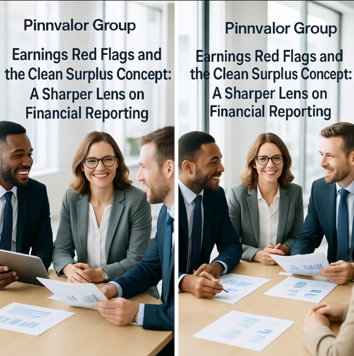

Earnings Red Flags and the Clean Surplus Concept: A Sharper Lens on Financial Reporting
Financial statements are more than just numbers—they are stories about a company’s performance, future prospects, and the integrity of its management. While earnings often steal the spotlight, not all profits are created equal. Analysts and investors need sharper tools to distinguish sustainable performance from financial window-dressing. Two powerful lenses— earnings red flags and the clean surplus concept—help in separating genuine value creation from accounting maneuvers.
Are your investment decisions safe from hidden red flags in financial reports?
Numbers can be shaped, but value can’t be faked. Red flags and clean surplus keep investors focused on what truly matters.
Understanding Earnings Red Flags
Earnings red flags are signals that the reported profits may not fully reflect a company’s true economic condition. These warning signs often emerge when management manipulates accounting estimates, engages in aggressive revenue recognition, or shifts expenses to mislead stakeholders.
Common Red Flags to Watch:
- Unusual Revenue Growth vs. Cash Flow – Rapidly rising sales without a corresponding increase in operating cash flow may suggest premature revenue recognition.
- Persistent Use of One-Time Gains – Heavy reliance on extraordinary items or non-recurring income to boost profits raises sustainability concerns.
- High Accounts Receivable or Inventory Buildup – A sharp rise in receivables or inventory, outpacing sales growth, can point to collection risks or unsold stock issues.
- Frequent Changes in Accounting Policies – Sudden shifts in depreciation methods, revenue recognition criteria, or valuation techniques may signal earnings management.
- Mismatch Between Profitability and Fundamentals – If earnings rise despite stagnant or declining margins, analysts must dig deeper into cost allocations and accruals.
These red flags don’t always indicate fraud, but they demand a closer examination to ensure reported earnings reflect reality.
The Clean Surplus Concept Explained
The clean surplus concept is an accounting approach that links changes in shareholders’ equity directly to the company’s performance. Under this principle, all income and expenses are routed through the profit and loss account, not bypassed into reserves or directly adjusted in equity.
Why It Matters:
- Ensures completeness of earnings: Profit truly reflects all gains and losses, without hidden adjustments.
- Provides a clearer valuation base: Investors can better estimate intrinsic value using residual income models.
- Enhances comparability across firms: Clean surplus accounting reduces distortions caused by selective exclusions.
Practical Example:
If a company records a gain on revaluation of an asset and reports it directly in reserves instead of the income statement, the surplus is “dirty.” This bypass hides economic gains from net income, reducing transparency for analysts.
Earnings Red Flags and Clean Surplus: A Combined Lens
- Spotting Hidden Adjustments – Clean surplus ensures that management cannot sidestep reporting losses or gains directly into equity, which often serves as a red flag.
- Validating Earnings Quality – Red flags highlight areas where earnings may be overstated, while clean surplus principles ensure a full picture of income is captured.
- Strengthening Valuation Models – Clean surplus accounting supports residual income valuation, while red flag checks ensure inputs are not distorted by accounting tricks.
Why It Matters for Stakeholders
For investors, these tools safeguard against overpaying for inflated earnings.
For analysts, they provide a disciplined framework to evaluate earnings quality.
For regulators, they serve as benchmarks to demand transparency and protect market integrity.
Ultimately, integrating these approaches empowers stakeholders to focus on sustainable value creation rather than short-term accounting maneuvers.
Conclusion
Earnings red flags and the clean surplus concept are not just theoretical constructs—they are practical lenses that sharpen financial analysis. While red flags warn us where to dig deeper, the clean surplus concept ensures that the financial picture is complete and transparent. Together, they reinforce trust in financial reporting and guide smarter investment decisions.
In a world where numbers can be shaped, these tools remind us that clarity, transparency, and skepticism remain the investor’s best allies.